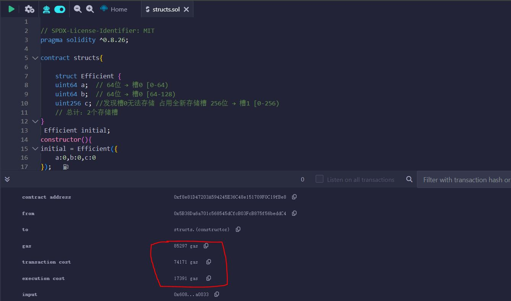
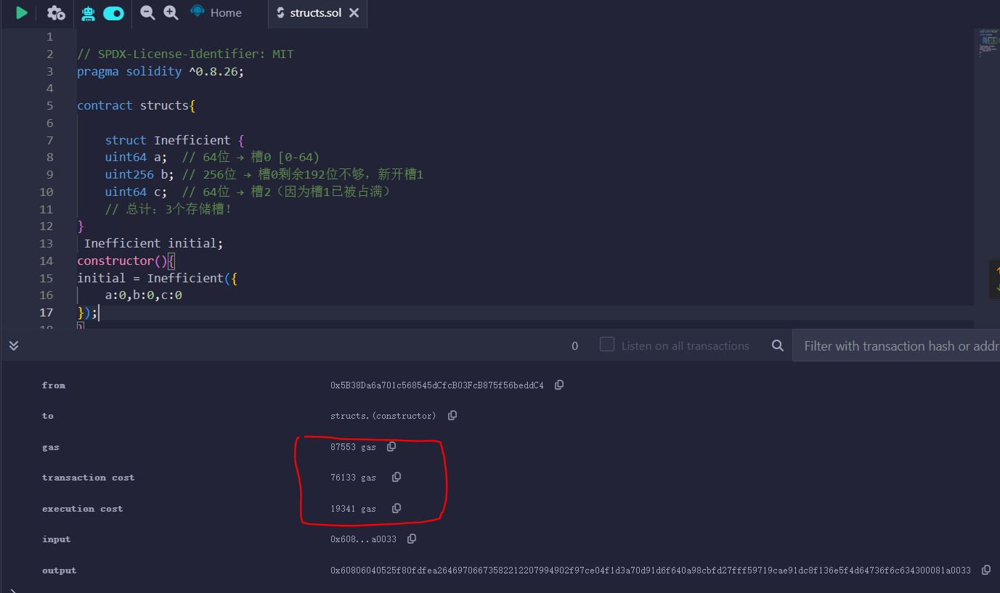

针对数据类型和数据结构的优化
在 Solidity 中，合理选择数据结构和优化数据大小可以显著降低 Gas 消耗。以下是一些关键优化策略：
基本常识：
-
变量存储槽 (Storage Slot) 大小: 在以太坊的 EVM (以太坊虚拟机) 中，用于存储合约状态变量的存储空间被划分为一个个大小为 256 位 (32 字节) 的存储槽。每个状态变量都会被分配到一个或多个连续的存储槽。
-
变量三种声明 (数据位置 - Data Location): 在 Solidity 中，变量可以声明在三个不同的数据位置，这决定了变量的生命周期和存储方式：
-
memory:- 用于存储函数调用期间的临时变量。
- 当函数执行结束时，
memory中分配的内存会被自动释放。 memory中的变量是不可持久化的，合约的状态不会保存在memory中。- 函数参数（除了
storage类型）、局部变量以及使用new关键字创建的动态类型（如动态数组、bytes和string）默认声明在memory中。
-
calldata:- 用于存储函数调用的输入数据。
- 类似于
memory，calldata中的数据也是临时的，在函数调用结束后失效。 calldata主要用于接收外部函数调用的参数，特别是结构体或动态数组等复杂类型。calldata的一个重要特性是它是只读的，你不能修改calldata中的数据。这有助于节省 Gas。- 外部函数的参数默认声明在
calldata中。
-
storage:- 用于存储合约的状态变量。
storage中的数据是持久化的，会存储在区块链的状态中，并且在合约的所有函数调用之间都保持不变。- 访问和修改
storage中的数据通常比memory和calldata更昂贵 (消耗更多的 Gas)。 - 在合约中直接声明的变量（在函数外部）默认声明在
storage中。
-
总结一下它们的主要区别：
| 特性 | memory |
calldata |
storage |
|---|---|---|---|
| 存储位置 | EVM 的临时内存 | 函数调用的输入数据 | 区块链的状态存储 |
| 生命周期 | 函数调用期间 | 函数调用期间 | 合约的整个生命周期 |
| 持久性 | 非持久化 | 非持久化 | 持久化 |
| 可修改性 | 可读写 | 只读 | 可读写 |
| Gas 成本 | 相对较低 | 相对较低 | 相对较高 |
| 默认用于 | 函数局部变量、new 创建的动态类型 |
外部函数参数 | 合约状态变量 |
基本数据类型优化
使用最小够用的数据类型：
uint8而非uint256（当数值范围允许时）bytes1到bytes32而非bytes或string（对于固定长度数据）
变量打包：
- 变量打包机制:EVM 会按照合约声明的变量顺序进行打包，一个存储槽无法将对应变量装入时会新增存储槽
核心打包规则
-
顺序严格按声明顺序
EVM 不会自动重新排序变量，而是严格按照结构体或合约中的定义顺序，从左到右、从上到下尝试打包。 -
能打包的条件
- 当前存储槽剩余空间 ≥ 变量大小
- 变量类型允许打包（动态数组、映射等复杂类型不能打包）
-
打包失败时
如果当前槽剩余空间不足，变量会占用一个全新的存储槽（即使它本身很小）。
实际案例对比
案例 1：高效打包（节省 Gas）
struct Efficient {
uint64 a; // 64位 → 槽0 [0-64)
uint64 b; // 64位 → 槽0 [64-128)
uint256 c; //发现槽0无法存储 占用全新存储槽 256位 → 槽1 [0-256)
// 总计：2个存储槽
}

案例 2：未优化顺序（浪费 Gas）
struct Inefficient {
uint64 a; // 64位 → 槽0 [0-64)
uint256 b; // 256位 → 槽0剩余192位不够，新开槽1
uint64 c; // 64位 → 槽2（因为槽1已被占满）
// 总计：3个存储槽！
}

案例 3：动态类型无法打包
struct WithDynamic {
uint64 a; // 槽0 [0-64)
string name; // 动态类型，强制新开槽1
uint64 b; // 槽2（因为槽1被string占用）
// 总计：3个存储槽
}
关键优化技巧
-
降序排列变量
将uint256、bytes32等大类型放在前面，小类型（uint64、bool等）放在后面，减少"碎片"。- 此处作为功能开发完全后进行的操作，通过变更数据位置而进一步优化。至于能否由小到大排序，自然也是可以的。不过这样要精确计算各变量能否组合，共同放入槽内，不如由大到小最后交给编译程序判断。
-
避免穿插动态类型
动态数组、映射、string会强制新开槽，尽量将它们放在结构体末尾。 -
显式使用
uint打包
如果变量逻辑相关，可以手动位操作打包到uint256中（极端优化场景用）。 -
继承结构体的顺序
父合约的变量优先存储，子合约的变量后续存储，需整体考虑打包。
数据结构选择
-
数组优化：
- 对于小型固定集合，使用固定大小数组
uint[10]而非动态数组uint[] - 考虑使用
bytes32[]而非uint256[]如果数据可以适应
- 对于小型固定集合，使用固定大小数组
-
映射 vs 数组：
- 映射(
mapping)通常比数组更省 Gas（特别是稀疏数据时） - 但需要遍历时数组更高效
- 映射(
-
高效的结构体设计：
struct GasEfficient { uint32 time; uint64 value; address user; // 160位 // 总共256位，正好一个存储槽 }
存储布局优化
-
变量顺序：
- 将一起使用的变量声明在一起，帮助编译器打包
- 将
uint和bytes32等 256 位类型放在前面
-
存储与内存：
- 尽可能使用
memory而非storage（内存操作更便宜） - 对临时变量使用
calldata（最便宜）
- 尽可能使用
高级技巧
-
位压缩：
uint256 packedData; function setData(uint16 a, uint16 b, uint16 c) internal { packedData = uint256(a) << 32 | uint256(b) << 16 | uint256(c); }
- 对于追求低存储空间占用的程序尤为有效。可以以同一个存储槽通过各个位级操作记录不同的信息。
- 比如 USDC 中占用最高位的 blacklist。在账户余额存储占用有限的状况下可以节省 1bit 作为账号是否拉黑的标记，而不用多生成一个 mapping。(详见代码分析篇)
-
使用 EVM 字长：
- EVM 处理 256 位(32 字节)最有效
- 即使小数据类型也会占用 256 位存储（除非打包）
-
替代数据结构：
- 考虑使用 Merkle 树或 Patricia 树处理大量数据
- 对于枚举类型，使用
uint8足够
实际应用示例
// 优化前
struct User {
string name; // 昂贵
uint256 balance;
uint256 lastActive; // 时间戳不需要uint256
}
// 优化后
struct OptimizedUser {
bytes32 name; // 固定长度
uint128 balance; // 足够表示大多数代币金额
uint64 lastActive; // 足够表示到公元3000年
}
记住：在优化时要权衡 Gas 节省与代码可读性/维护性，过度优化有时会导致代码难以理解和维护。